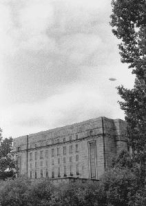

(engl. unidentified flying object, UFO). Ufolla tarkoitetaan tunnistamatonta lentävää esinettä, usein epätavallista valoilmiötä. Yli 90% ufoista tunnistetaan esimerkiksi raketeiksi, sää- ja tutkimuspalloiksi, linnuiksi, meteoriiteiksi, planeetoiksi tai suoranaisiksi huijauksiksi. Näistä tunnistetuista ufoista tulee ifoja, tunnistettuja lentäviä esineitä. Varsin pieni osa jää siis varsinaisiksi tunnistamattomiksi ufoiksi. Monet uskovat näiden selittämättömien havaintojen kertovan avaruusolioiden vierailuista Maassa.

Vaikka ufohavaintoja on tehty ympäri maailmaa ja aikaisemminkin, modernin ufovillityksen voidaan katsoa alkaneen Yhdysvalloissa vuonna 1947. Tiistaina kesäkuun 24. päivänä liikemies Kenneth Arnold (1915–1984) lensi konettaan Mount Rainierin luona Washingtonin osavaltiossa, kun hän havaitsi yhdeksän esinettä, jotka lensivät muodostelmassa huomattavalla nopeudella.
Arnold kuvasi toimittajalle, että auringossa kimaltelevat esineet ”lensivät kuin lautanen, kun sen heittää veden poikki”. Arnold ei siis kertonut ufojen olevan lautasten muotoisia, vaan niiden lentäneen heittelehtien. Lehdistö nimitti niitä kuitenkin lautasiksi, ja näin sai alkunsa käsite ”lentävä lautanen” (engl. flying saucer). Julkisuuden myötä lentäviä lautasia tuli esille enemmänkin, esimerkiksi Roswellissa.
Skeptikko Martin Gardnerin mukaan ufo-havaintoja yritettiin selittää ulkoavaruuden vierailla ensimmäisen kerran 1940-luvun lopussa Fate-nimisessä rajatietolehdessä. Arnold kirjoitti vuonna 1948 lehden ensimmäiseen numeroon artikkelin ”I did see the flying disks”. Vuonna 1950 Donald Keyhoe väitti True-lehdessä, että avaruusoliot olivat tarkkailleet Maata jo 175 vuoden ajan.
Sittemmin avaruusolioiden vierailujen todistusaineistoksi on tarjottu muun muassa tutkahavaintoja, valokuvia ufoista, lentäjien kertomuksia ja astronauttien ufohavaintoja. Myös ns. karjansilpomisten on väitetty olevan avaruusolioiden aikaansaannoksia. Vuonna 1961 ufo-havainnot siirtyivät kolmannelle asteelle, kun avaruusalus väitetysti sieppasi syyskuun 19. päivänä Betty ja Barney Hillin. Sittemmin abduktioita eli ufosieppauksia on väitetty tapahtuneen jopa miljoonia.
Jo vuonna 1955 George Adamski oli tosin julkaissut kirjan Inside the space ships, jossa hän kuvasi matkojaan avaruusaluksissa. Alunperin kirja oli tarkoitettu tieteisromaaniksi, mutta yleisölle se tarjoiltiin tositarinana.
Suomessa ufoja on nähty ainakin 1940-luvun puolivälistä lähtien. Vuoden 1946 aikana hämmennystä aiheuttivat ns. aaveraketit. Havaintoja näistä oudoista valoista ja raketeista tehtiin Skandinaviasta aina Intiaan saakka. Nykyisin ufohavaintojen lähteenä toimii myös entisen Neuvostoliiton alue.
Kriittiset skeptikot kuten tähtitieteilijä Donald H. Menzel ja insinööri Philip J. Klass ovat alusta lähtien kyseenalaistaneet avaruusalus-teorian. Ufotapauksiin on käytetty runsaasti inhimillisiä resursseja, mutta ainakaan vielä päteviä todisteita avaruusolioiden vierailuista ei ole. Muun muassa yhdysvaltalaisten viranomaisten tutkimusohjelmat ovat osoittautuneet tuloksettomiksi (Project Saucer, Project Blue Book, Robertsonin paneeli, Condonin komitea jne.). Maan ulkopuolista älykästä elämää etsivät SETI-projektitkaan eivät ole antaneet positiivisia tuloksia.
Kiistämätöntä on se, että jotkut ovat tehneet outoja havaintoja ja joillakin on ollut epätavallisia kokemuksia. Kiistämätöntä on myös se, että kaikkia ufo-havaintoja ei voida selittää ”tunnetuilla tekijöillä”; selittämättömiksi jää alle 10% tapauksista. Mutta selittämättömyys ei tarkoita, että tapaukset olisivat automaattisesti havaintoja muiden sivilisaatioiden avaruusaluksista. Ilman riippumattomia todisteita ne ovat vain ufoja, tunnistamattomia lentäviä esineitä.
Tuleekin ymmärtää, että käsitteellä ”ufo” on kaksi merkitystä. Toisen mukaan ufot ovat avaruusolioiden aluksia, toisen mukaan ne ovat vain tunnistamattomiksi jääneitä lentäviä esineitä. Keskusteltaessa ufoista on pidettävä mielessä nämä kaksi ratkaisevan erilaista merkitystä: kaikki, jopa kriittisimmät skeptikot, myöntävät ufojen olemassaolon, mutta kaikki eivät suinkaan usko niiden olevan avaruusaluksia.
Todisteiden puuttuminen ei ole estänyt mediaa ja viihdeteollisuutta käyttämästä ufoja hyväkseen. Lentävistä lautasista kertovat lehtijutut, tarinat, uutiset, elokuvat, sarjat ja ”asiadokumentit” ovat viihdyttäneet ihmisiä, mutta toisaalta ruokkineet ihmisten pelkoja, salaliittoteorioita, uskoa paranormaaleihin ilmiöihin sekä mittavaa ufoteollisuutta. Vakuuttavuutta ufoteollisuudelle on tuonut pseudotieteellinen ufologia.
Mitään uutta ihmiskuntaa ja Maata pelastamaan tai uhkaamaan tulleissa avaruusolennoissa ei juurikaan ole. Niitä voi pitää teknologisen aikakauden enkeleinä tai jumalolentoina. Uutta ei ole myöskään oudoissa ilmiöissä taivaalla tai ilma-alusten maahansyöksyissä. Esimerkiksi viime vuosisadan loppupuolella ns. aaveilma-alukset synnyttivät Yhdysvalloissa vastaavanlaisen sosiaalisen ilmiön.
Katso: Aaveilma-alukset; Ifo; Roswellin tapaus; Ufologia; Ufosieppaus; Ufouskonto.
Kirjallisuutta: Blake 1992; Gardner 1957; Karttunen 1989, 1997a; Klass 1983, 1985, 1996; Kuure Kyröläinen Nyman ja Piironen 1993; Kyröläinen 1994; Sheaffer 1997; Tanaka 2000.